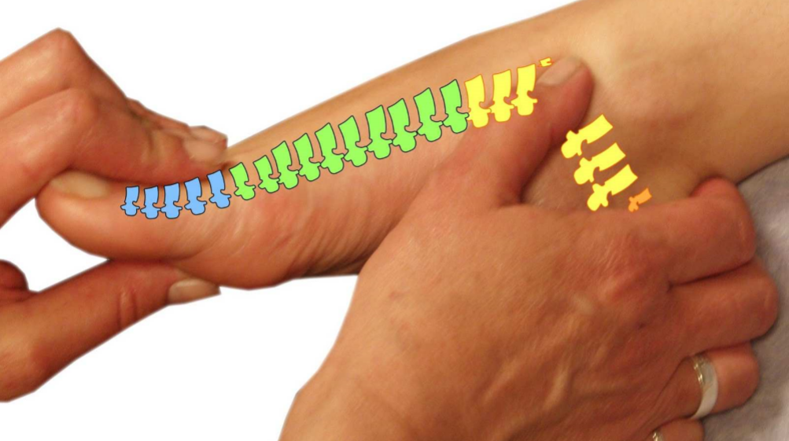

Er zijn verschillende klachten of ziektes waarbij uit ervaring reflexologie kan helpen; om enkele te noemen:
Gezichtsreflexologie is ontwikkeld door Lone Sorenson. Sinds 1978 is Lone bezig met het ontwikkelen van dit concept. Het is gebaseerd op verschillende micro systemen en onderbouwd door wetenschappelijk onderzoeken van Dr. Yamamoto (YNSA), Japan, Dr. Castillo Morales, Argentinë, Dr. Wong, USA, Dr. Chau, Vietnam, Maria Perez, Argentinë, Dr. J. Bossy, Frankrijk. Op het gezicht bevinden zich zones en punten die corresponderen met organen en meridianen in het lichaam. Door manuele stimulatie/massage van deze zones en punten kan op specifieke klachten en verstoringen gewerkt worden. De massagebehandeling werkt ontspannend en kan zowel door kinderen als ouderen goed worden verdragen. Het is vooral effectief bij hormonale verstoringen, stress gerelateerde problemen en alle aandoeningen die met de hersenen te maken hebben. Dit neemt niet weg dat het voor iedereen een gezonde en preventieve massage kan zijn.
 Voetreflexologie, zowel bij de klassieke als de Tibetaanse neuro voetreflexologie is een aangename drukpunt massage op zones en punten die systemen, de hersenen en organen van het lichaam weerspiegelen. Het wordt al eeuwen uitgevoerd in landen zoals Egypte, China, Noord en Zuid America. Men wist toen al dat de behandeling had een goed effect op gezondheid en emotionele welzijn. Door het gebruik van verschillende technieken wordt het zelfherstellend vermogen van de cliënt aangesproken en gestimuleerd. Zoals bij gezichtsreflexologie kan deze behandeling zeer ontspannend werken en bevordert o.a. de bloed en lymfe doorstroming, hormonaal functies, afvoer van afvalstoffen en de emotionele gesteldheid. Vanuit ervaring wordt de aanraking van voetreflexologie door dove, visuele en hersenbeperkte cliënten beter geaccepteerd dan gezichtsreflexologie.
De handreflexologie is vergelijkbaar met de voetreflextherapie. Ook in je handen bevinden zich drukpunten en reflexzones die de hersenen en organen van het lichaam weerspiegelen. Na instructie door de therapeut is het thuis makkelijk om deze therapie zelf toe te passen. Door de reflexpunten in je handen te masseren, wordt de doorbloeding in je lichaam gestimuleerd waardoor het zelfgenezend vermogen van je lichaam wordt aangemoedigd. Anderzijds biedt een handreflexmassage (en gezichtsreflex) uitkomst als de voeten niet te behandelen zijn vanwege b.v. verwonding, botbreuk, extreem eczeem of omdat je het gewoonweg niet fijn vindt dat iemand aan je voeten zit.
Thermie is een diepe warmte behandeling met geneeskrachtig kruiden (wierook) die de algehele energiedoorstroming intensiveert. Het is een methode om verschillende gebieden van het lichaam te stimuleren om de communicatie tussen hersenen en organen te behouden of te herstellen. Het activeert de bloedcirculatie, het ontgiftingsproces wordt versterkt en helpt bij het creëren van nieuwe cellen vanuit het beenmerg. Deze methode versterkt het immuunsysteem en bevordert het natuurlijk genezend vermogen van zowel gezonde en zieke mensen. Het is goed toepasbaar bij o.a. vele chronische ziekten, oedeem klachten, stofwisselings- en hormonaal problemen, spiertonus verbetering, diepe rimpels en littekenweefsel vermindering en stress reductie.
Goede voeding is van essentieel belang voor uw welbevinden. Kleine veranderingen in uw voedingspatroon kunnen er voor zorgen dat u zich vitaler en gezonder voelt. Een voedingsadvies is daarom altijd op zijn plaats. Door inzichten van chineesvoedingsleer, orthomoleculaire en fytotherapeutica (medische kruiden) en gebruik te maken van een bodyscananalyzer (zie Links) kunt u worden geadviseerd over het gebruik van voeding, kruiden en micro supplementen die bij uw constitutie past. Chinese vuistregel voor een gebalanceerde maaltijd is: 10% dierlijk producten, 40% graan, zaad en noot soorten, 50% groenten en fruit. (5 soorten groenten en fruit van verschillende kleuren ieder dag)